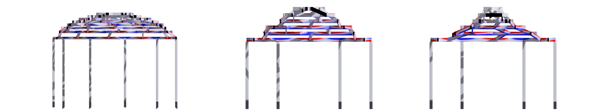
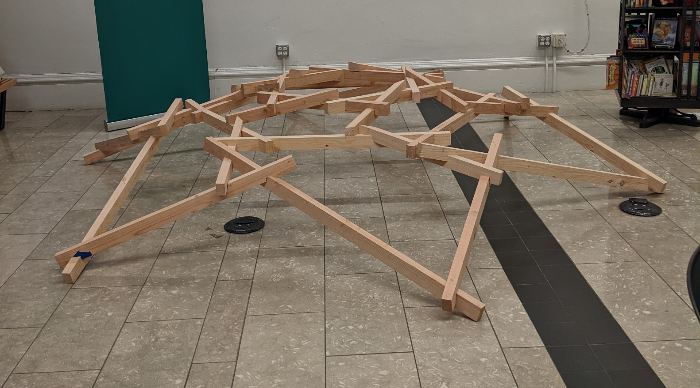
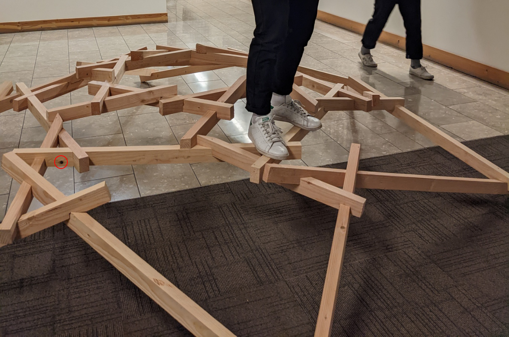
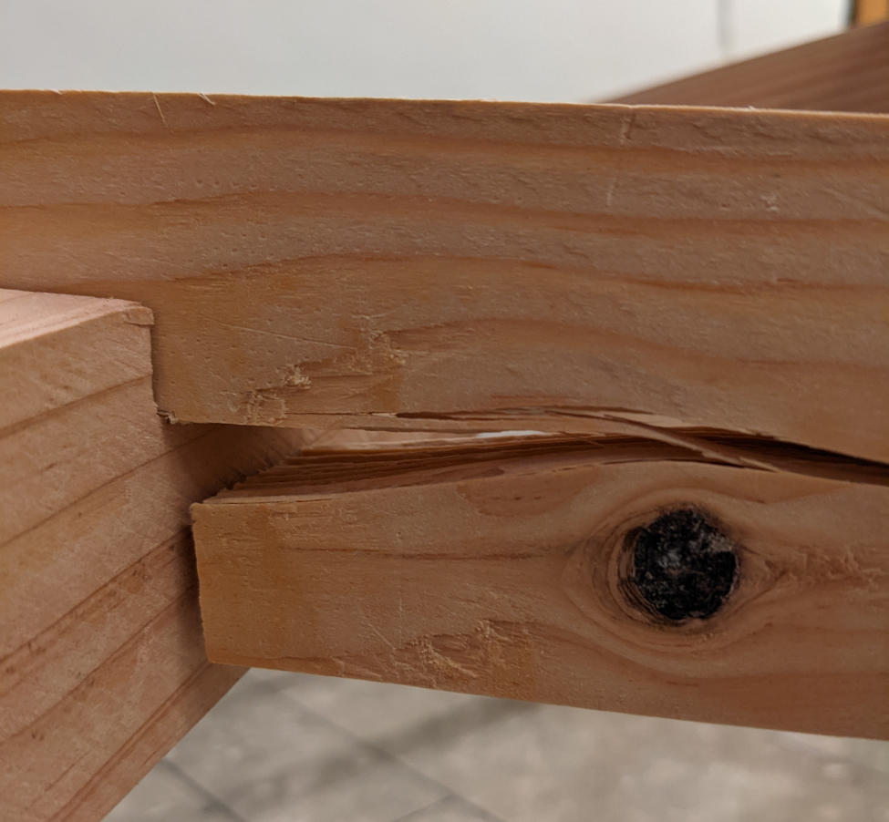

{{page.album-title}}
Project Brief
In this project we collaborated with Oregon State University engineering students to develop a parametric, reciprocal framed structure for re-use of Mass Plywood Panel (MPP) scraps with CNC fabrication at the TallWood Design Institute Emerson Lab. The goal of creating a reciprocal structure is to allow for fast assembly and disassembly with no mechanical fasteners allowing the structure to move nomadically.
Design
As a team we began designing by looking at nature as we found the modular structure of reciprocal frames to relate to cellular structures found in nature. As a team we found it difficult to innovate a new reciprocal module as most follow similar 3 or 4 member lap patterns which is essential for the structural capabilities. This led us to abstract natural forms into alternating polygons to break up regularity and structural twisting force. Our final design consists of the alternating polygons which are planar and connected by sloping members. To improve the edge condition we added a secondary reciprocal system that lets the structure meet the ground in a way that matches the rest of the design. This all culminates to form a roof structure that site atop triangular fin columns that align with the angles above.
Parametric Modelling
Before developing the parametric model it was key to understand the geometry of the system and what it meant for fabrication. To develop the parametric model I worked with Houdini to give me the most flexibility, you can view and download a condensed script here. The script was made to use ramp scaling on the base radius of the polygons to allow to section testing in terms of concavity and convexity. Then using Task Operators (TOPs) I generated a few thousand variations testing different parameters, some of which can be seen in the video below.
Structural Testing and Form Finding
Working together with our teams engineering students we analyzed our structure using Karamba inside of grasshopper, using the geometry exported from the parametric model in Houdini. There were several aspects we wanted to test with the first being convex, liner and concave forms seen below. The test results showed decreases in performance in both convex and concave forms but with 400% decrease in performance in concave forms, making linear the most efficient. 
Fabrication Optimization
Not using any mechanical fasteners meant all of our joints were half laps or birds mouth connections. Where we realized our model was constrained was in the maximum slope it could be which we created an equation to define. Max Slope = tan-1((member depth – notch depth)/(extension length * tan(360/number of sides))). This restriction comes from the notches becoming too deep to be structurally efficient. Another problem is that notches would often have compound angles where if optimized there would only be a single plane. This was a function of how deep the sloping member notched into the horizontal member and is shown below along with other notching factors.
Construction
Our teams design was unable to be fabricated on the CNC at the TallWood Institute so our model was made out of Douglas Fir 2x6 which were ripped to 1.5"x2.5" which I then notched by hand using a multi-tool and chisel totalling over 140 notches. This structure is seen below and measures 12' diameter and is assembled in 6 minutes and disassembled in 2. Construction a full scale model was helpful in understanding the properties of non-engineered wood products which have imperfections like knots. After walking on the structure for a minute or so it broke at one of the notches. This told us two things, the first of which is that the knots should always be on the compression side which was not the case here and second that the structure is most efficient when loaded from the top. This is because the load is evenly distributed among all of the sloping member when standing at the peak whereas in the image below if you trace the load paths from the standing point they are concentrated on only 3 of the sloped members with the one of the left being the breaking point.   
{{image.caption}}
{{image.copyright}}